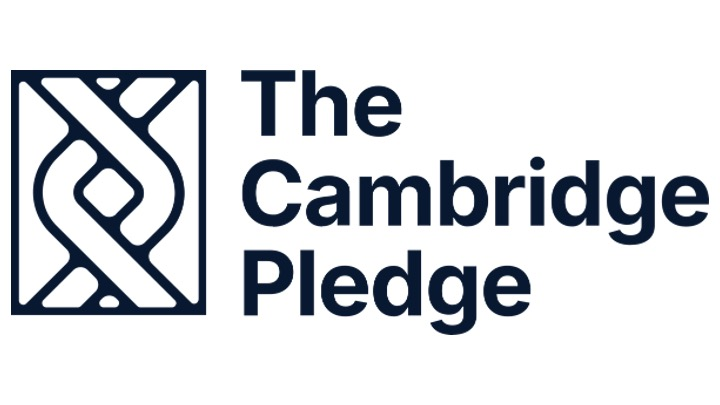

<!doctype html><html lang="zh-CN"><meta charset="utf-8"><meta name="viewport" content="width=device-width,initial-scale=1"><title>留一点，给花 · Cambridge Pledge</title><style>
:root{--ink:#263b38;--paper:#faf5ef;--green:#365d47;--orange:#bf6544}*{box-sizing:border-box}body{margin:0;background:var(--paper);color:var(--ink);font-family:Inter,-apple-system,BlinkMacSystemFont,'Segoe UI',sans-serif}button,a{touch-action:manipulation}button{font:inherit;cursor:pointer}header{position:sticky;top:0;z-index:5;background:#faf5eff5;border-bottom:1px solid #d8d9cd;display:flex;align-items:center;justify-content:space-between;padding:12px 5vw}header img{width:118px;height:40px;object-fit:contain;mix-blend-mode:multiply}header span{font-size:12px;color:#727b6e}main{max-width:1180px;margin:32px auto;padding:0 24px}h1{font-family:Georgia,serif;font-size:42px;font-weight:500;letter-spacing:-2px;margin:8px 0 12px}.intro{color:#67766a;font-size:14px;line-height:1.8}.eyebrow{font-size:11px;letter-spacing:3px;text-transform:uppercase;color:#7b806d}.layout{display:grid;grid-template-columns:1.15fr 1fr;gap:30px;margin-top:26px}.scene{border:6px solid #354b43;background:#bac8b5;position:relative}canvas{width:100%;display:block;image-rendering:pixelated;aspect-ratio:1.42}.scene-label{position:absolute;left:16px;top:14px;background:#faf5efdf;padding:7px 11px;font-size:12px}.caption{padding:16px;background:#354b43;color:#faf5ef;font-size:14px;line-height:1.7;min-height:79px}.stats{display:grid;grid-template-columns:repeat(3,1fr);gap:10px;margin:16px 0}.stat{border-bottom:2px solid #ced5c8;padding:10px 0}.stat label{font-size:12px;color:#69756a}.stat strong{display:block;font-size:25px;margin:5px 0;font-weight:500}.bar{height:5px;background:#dedfd3}.bar i{display:block;height:100%;background:var(--green);transition:width .3s}.goal{font-size:13px;padding:12px 0;line-height:1.7}.section-title{display:flex;justify-content:space-between;align-items:center;margin-bottom:14px}.section-title h2{font-size:19px;margin:0}.badge{font-size:12px;background:#e5e9db;padding:5px 9px}.actions{display:grid;gap:9px}.action{display:flex;text-align:left;width:100%;align-items:center;justify-content:space-between;gap:12px;border:1px solid #ccd1c4;background:#fffdf8;padding:14px 16px;color:var(--ink);border-radius:3px}.action:hover:not(:disabled){border-color:var(--green);background:#eff2e6;transform:translateY(-1px)}.action:disabled{opacity:.43;cursor:not-allowed}.action strong{display:block;font-size:14px}.action small{display:block;font-size:11px;color:#6c7768;margin-top:5px;line-height:1.5}.cost{font-size:12px;white-space:nowrap;color:#ad5b3b}.primary{border:0;background:var(--green);color:white;padding:16px 20px;width:100%;margin-top:16px}.secondary{border:1px solid #b4c0ac;background:transparent;color:var(--ink);padding:10px 16px}.notice{font-size:12px;line-height:1.7;margin:12px 0;color:#87553f;min-height:40px}.log{margin-top:22px;border-top:1px solid #d5d9cb;padding-top:12px;font-size:12px;line-height:1.9;color:#687568}.log p{margin:4px 0}footer{max-width:1180px;margin:28px auto;padding:20px 24px;border-top:1px solid #d5d9cb;font-size:11px;color:#7b8177;line-height:1.8}dialog{border:1px solid #b3bbaa;background:var(--paper);color:var(--ink);width:min(740px,94vw);max-height:90vh;padding:32px}dialog::backdrop{background:#182c26ba;backdrop-filter:blur(4px)}dialog h2{font-family:Georgia,serif;font-size:30px;font-weight:500;margin-top:0}.cards{display:grid;grid-template-columns:repeat(3,1fr);gap:12px;margin:22px 0}.support{border:1px solid #bcc8b4;background:#fffdf8;color:var(--ink);padding:22px 14px;text-align:left;line-height:1.7}.support b{display:block;margin-bottom:8px}.support small{display:block;font-size:12px}.support:hover{background:#e7eddc;border-color:#365d47}.result{display:grid;grid-template-columns:1fr 1fr;gap:14px;margin:20px 0}.result article{padding:20px;background:#e8ecdf;border-top:3px solid #365d47}.result b{font-size:28px;display:block;margin:12px 0}.tiny{font-size:12px;line-height:1.8;color:#69756a}a{color:var(--green)}.row{display:flex;gap:10px;flex-wrap:wrap}.row button{flex:1}.hidden{display:none!important}@media(max-width:760px){main{margin-top:20px;padding:0 16px}h1{font-size:34px}.layout{grid-template-columns:1fr;gap:20px}.cards{grid-template-columns:1fr}.support{padding:14px}.result{grid-template-columns:1fr}header{padding:10px 16px}header span{max-width:160px;text-align:right;font-size:10px}}
.feedback{margin-top:16px;padding:18px;border:2px solid #729173;background:#edf3e6;scroll-margin-top:80px}.feedback b{font-size:16px}.feedback p{margin:9px 0 0;font-size:13px;line-height:1.8}.changes{display:flex;flex-wrap:wrap;gap:8px;margin-top:12px}.changes span{background:#fffdf8;padding:7px 10px;font-size:13px;border:1px solid #c9d5bd}.alerts{display:grid;gap:8px;margin-bottom:14px}.alert{padding:12px 14px;border-left:4px solid #bf6544;background:#f5e7d9;font-size:12px;line-height:1.7}.alert strong{display:block;font-size:13px}.alert.severe{background:#f1dcd5;border-color:#a54735}.settlement{list-style:none;padding:0;margin:20px 0}.settlement li{display:flex;justify-content:space-between;gap:16px;padding:12px 0;border-bottom:1px solid #d2d8c8;font-size:14px}.flash{animation:flash .6s ease-out}@keyframes flash{from{background:#cee6bd;transform:translateY(3px)}to{background:#edf3e6;transform:translateY(0)}}@media(prefers-reduced-motion:reduce){.flash{animation:none}}
.pledge-badge{display:flex;flex-direction:column;align-items:center;gap:13px;width:min(290px,100%);margin:22px auto;padding:26px 20px;background:#eff2e6;border:2px solid #52745b;border-radius:24px;color:#263b38;box-shadow:0 5px 0 #d0d9c6}.pledge-badge:hover{background:#e1e9d6;transform:translateY(-2px)}.pledge-badge:focus-visible{outline:3px solid #bf6544;outline-offset:4px}.pledge-badge img{width:170px;max-width:100%;mix-blend-mode:multiply}.pledge-badge span{font-size:18px;font-weight:600}.pledge-badge small{font-size:12px}.pledge-seal{text-align:center;margin:20px 0 30px}.pledge-seal img{width:150px;mix-blend-mode:multiply}.support-reveal{border-left:4px solid #52745b;background:#e8eddd;padding:20px;margin:20px 0}.support-reveal strong{font-size:20px}.support-reveal p{line-height:1.7;margin-bottom:0}
.evidence-note{background:#eaf1e6;border-left:3px solid #54835e;padding:10px 13px;font-size:12px;line-height:1.8;margin:0 0 7px;color:#375b42}.evidence-note summary{cursor:pointer;font-weight:500}.evidence-note p{margin:9px 0}.evidence-note a{text-decoration:underline;text-underline-offset:3px}.scope{color:#687568;font-size:12px;line-height:1.8}.reflection{margin:28px 0;padding:24px 0;border-top:4px solid #476a50;border-bottom:4px solid #476a50}.reflection h3{font-size:24px;margin:10px 0 16px}.reflection-lead{font-size:15px;line-height:1.9}.pixel-divider{font-size:20px;letter-spacing:10px;color:#7e9b6f;margin-bottom:16px}.research-cards{display:grid;grid-template-columns:1fr 1fr;gap:14px}.research-cards article{padding:18px;background:#edf0e4;border:1px solid #c8d1bc;box-shadow:4px 4px 0 #d8dece}.research-value{font-size:24px;font-weight:600;color:#395f43}.research-cards h4{font-size:16px;margin:9px 0}.research-cards p{font-size:14px;line-height:1.85}.research-cards a{font-size:11px;line-height:1.7}.library-entry{padding:16px 0;border-bottom:1px solid #c8d1bc}.library-entry h4{line-height:1.6;margin:8px 0}.library-entry p{font-size:14px;line-height:1.8}.model-boundary{padding:16px;background:#f0e9dc;font-size:13px;line-height:1.8}#evidenceModal{width:min(850px,94vw)}@media(max-width:650px){.research-cards{grid-template-columns:1fr}.reflection h3{font-size:21px}}
</style><header><span>概念试玩 · 非官方发布作品</span></header><main><div class="eyebrow">A little room to grow / 01</div><h1>留一点，给花。</h1><div class="intro">四周后，生活账单到期。窗台上的花，也需要你。<br>把有限的体力分给工作、生活和照料，试着同时守住两件事。</div><div class="layout"><section><div class="scene"><div class="scene-label" id="sceneLabel"></div><canvas id="scene" width="320" height="224" aria-label="像素房间：窗外的剑桥街景与窗台上的花" role="img"></canvas><div class="caption" id="caption"></div></div><div class="stats"><div class="stat"><label>本周剩余体力</label><strong id="energy"></strong><div class="bar"><i id="energyBar"></i></div></div><div class="stat"><label>账单准备金</label><strong id="money"></strong><div class="bar"><i id="moneyBar"></i></div></div><div class="stat"><label>小花生命力</label><strong id="flower"></strong><div class="bar"><i id="flowerBar"></i></div></div></div><div class="goal">双目标：第 4 周末准备好 <b>£700</b>，同时让花保持存活。<br><span id="supportLabel">第一轮 · 尚未加入额外支持</span></div><div class="row"><button class="secondary" id="reset">重新开始</button><button class="secondary" onclick="showEvidenceLibrary()">文献与游戏设定 ↗</button></div></section><section><div class="section-title"><h2 id="week"></h2><span class="badge" id="job"></span></div><div class="tiny" style="margin-bottom:14px">每周基础体力 9，必要家务固定消耗 2。花每周结算失去 30 点生命力；已死亡的花无法通过浇水复活。</div><div id="alerts" class="alerts" aria-live="polite"></div><div class="actions" id="actions"></div><section id="feedback" class="feedback" role="status" aria-live="polite"><b>选择一个行动开始</b><p>行动后，这里会显示消耗、收益与剩余体力。</p></section><div class="notice" id="notice" role="status" aria-live="polite"></div><button class="primary" id="next">结束这一周 →</button><div class="log" id="log" aria-live="polite"></div></section></div></main><footer><details><summary>研究与规则说明：这是机制测试版</summary><p>第一轮刻意设置为双目标无法同时完成；支持轮可通过合理安排完成双目标。这是叙事机制，不是对现实家庭处境的预测。四周、£700、体力点数、工资、岗位警告和植物衰减均为待验证的游戏参数，不是剑桥家庭预算、劳动制度或真实植物照料建议。场景为虚构，不代表任何真实家庭。支持卡测试食物、经济援助与志愿协助三种机制，不代表 Cambridge Pledge 当前提供或保证这些服务。研究来源、适用范围与设计参数已列于“文献与游戏设定”；活动提交版本应在活动期间使用 MANIFEST 新建。</p></details></footer><dialog id="modal"></dialog><dialog id="evidenceModal" aria-label="文献与游戏设定"></dialog><script src="evidence-data.js?v=evidence-1"></script><script src="evidence.js?v=evidence-1"></script><script src="game.js?v=evidence-1"></script></html>
